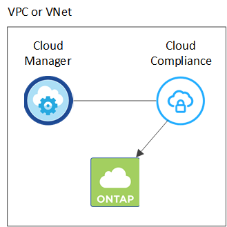
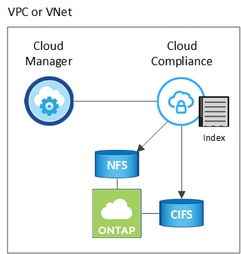

了解云合规性
提供者
云合规性是一项适用于 AWS 和 Azure 中 Cloud Volumes ONTAP 的数据隐私和合规服务。借助人工智能（ AI ）驱动的技术，云合规性可帮助企业了解数据环境并识别 Cloud Volumes ONTAP 系统中的敏感数据。
Cloud Compliance 目前作为受控可用性版本提供。
功能
Cloud Compliance 提供了多种工具，可帮助您完成合规工作。您可以使用 Cloud Compliance ：
-
识别个人身份信息（ PiII ）
-
根据 GDPR ， CCPA ， PCI 和 HIPAA 隐私法规的要求确定广泛的敏感信息
-
响应数据主体访问请求（ DSAar ）
成本
云合规性是 NetApp 为 Cloud Volumes ONTAP 提供的一项附加服务，无需额外付费。激活云合规性需要部署云实例，您的云提供商将向您收取此实例的费用。数据传入或传出不收费，因为数据不会在网络外部流动。
Cloud Compliance 的工作原理
概括地说，云合规性的工作原理如下：
-
您可以在一个或多个 Cloud Volumes ONTAP 系统上启用云合规性。
-
Cloud Compliance 使用 AI 学习流程扫描数据。
-
在 Cloud Manager 中，单击 * 合规性 * ，然后使用提供的信息板和报告工具帮助您实现合规性。
Cloud Compliance 实例
在一个或多个 Cloud Volumes ONTAP 系统上启用云合规性后， Cloud Manager 会在请求中的第一个 Cloud Volumes ONTAP 系统所在的同一 VPC 或 vNet 中部署一个云合规实例。

有关此实例，请注意以下事项：
-
在 Azure 中， Cloud Compliance 在具有 512 GB 磁盘的 Standard_d16s_v3 VM 上运行。
-
在 AWS 中， Cloud Compliance 在具有 500 GB IO1 磁盘的 m5.4xlarge 实例上运行。
在 m5.4xlarge 不可用的区域中， Cloud Compliance 会在 m4.4xlarge 实例上运行。
-
此实例名为 CloudCompliance ，并与生成的哈希（ UUID ）串联在一起。例如： CloudCompliance" — 16bb6564-38AD-4080-9a92 — 36f5fd2f71c7
-
每个 Cloud Manager 系统仅部署一个 Cloud Compliance 实例。
-
Cloud Compliance 软件的升级是自动化的—您无需担心。

|
此实例应始终保持运行状态，因为云合规性会持续扫描 Cloud Volumes ONTAP 系统上的数据。 |
扫描的工作原理
启用 Cloud Compliance 后，它会立即开始扫描您的数据以识别个人和敏感数据。
Cloud Compliance 通过挂载 NFS 和 CIFS 卷与任何其他客户端一样连接到 Cloud Volumes ONTAP 。NFS 卷会自动以只读方式访问，而您需要提供 Active Directory 凭据来扫描 CIFS 卷。
Cloud Compliance 会扫描每个卷上的非结构化数据以查找一系列个人信息。它会映射您的组织数据，对每个文件进行分类，并标识和提取数据中的实体和预定义模式。扫描的结果是个人信息，敏感个人信息和数据类别的索引。

在初始扫描之后， Cloud Compliance 会持续扫描每个卷以检测增量更改（因此，保持实例运行非常重要）。
您可以在工作环境级别打开和关闭扫描，但不能在卷级别打开和关闭扫描。 "了解如何操作"。
Cloud Compliance 索引的信息
Cloud Compliance 收集非结构化数据（文件）并为其编制索引和分配类别。Cloud Compliance 索引的数据包括以下内容：
- 标准元数据
-
Cloud Compliance 收集有关文件的标准元数据：文件类型，大小，创建和修改日期等。
- 个人数据
-
个人身份信息，例如电子邮件地址，标识号或信用卡号。 "了解有关个人数据的更多信息"。
- 敏感的个人数据
-
GDPR 和其他隐私法规定义的特殊类型的敏感信息，例如健康数据，种族或政治观点。 "了解有关敏感个人数据的更多信息"。
- 类别
-
Cloud Compliance 会获取所扫描的数据并将其划分为不同类型的类别。类别是基于 AI 对每个文件的内容和元数据的分析而得出的主题。 "了解有关类别的更多信息"。
- 名称实体识别
-
Cloud Compliance 使用 AI 从文档中提取自然人的姓名。 "了解如何响应数据主体访问请求"。
网络概述
Cloud Manager 会使用专用 IP 地址和安全组部署 Cloud Compliance 实例，以便从 Cloud Manager 启用入站 HTTP 连接。通过此连接，您可以从 Cloud Manager 界面访问 Cloud Compliance 信息板。
出站规则完全开放。此实例通过 Cloud Manager 的代理连接到 Cloud Volumes ONTAP 系统和 Internet 。要升级 Cloud Compliance 软件并发送使用情况指标，需要访问 Internet 。
如果您有严格的网络连接要求， "了解 Cloud Compliance 所联系的端点"。
|
|
索引数据永远不会离开 Cloud Compliance 实例—数据不会在虚拟网络外部中继，也不会发送到 Cloud Manager 。 |
用户访问合规性信息
Cloud Manager 管理员可以查看所有工作环境的合规性信息。
Workspace 管理员只能查看其有权访问的系统的合规性信息。如果 Workspace 管理员无法访问 Cloud Manager 中的工作环境，则在合规性选项卡中看不到该工作环境的任何合规性信息。
 请求文档变更
请求文档变更 在 GitHub 上编辑
在 GitHub 上编辑 提供者指南
提供者指南